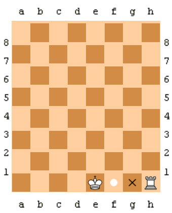

Chess For Us - Despre Sah
Alte mutari specifice
Sah (Joc) - Alte mutari specifice
- En passant
- Este mișcarea specială în care un pion este capturat de un alt pion oponent, imediat după ce primul s-a deplasat două câmpuri din poziția de start (până în dreptul pionului oponent) și care ar fi putut să fie capturat dacă s-ar fi deplasat doar un câmp. Poziția rezultată după această mutare este similară cu poziția mutării și capturii normale a pionului. Mutarea en passant trebuie făcută imediat după mutarea pionului, în caz contrar se pierde dreptul de a o mai face.
- Rocada mică
-
- Rocada mică este o mutare specială în șah care implică atât regele, cât și unul dintre turnuri și este realizată pentru a asigura protecția regelui și pentru a dezvolta rapid turnul. Pentru a face rocada mică, regele trebuie să fie mutat două pătrate spre turnul aflat pe coloana h (coloana turnului de pe partea regelui), iar turnul este apoi mutat peste rege și plasat pe pătratul imediat adiacent acestuia, adică pe f1 (pentru alb) sau f8 (pentru negru).
- Rocada mare
-
- Rocada mare este o altă formă de rocada în șah, care implică tot regele și un turn, dar de data aceasta pe partea damei (coloana a). Este utilizată pentru a muta regele într-o poziție mai sigură și pentru a activa turnul de pe coloana damei.
Pentru rocada mică regele trebuie să mute pe câmpul marcat cu x, iar turnul pe câmpul alb; rocada se poate face doar în anumite condiți.